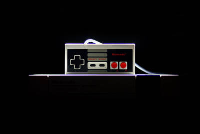

Um dos jogos mais vendidos
Minecraft é um jogo de sandbox e construção criado pela Mojang Studios. Lançado originalmente em 2011, o jogo rapidamente se tornou um fenômeno mundial, conquistando milhões de jogadores em diversas plataformas.
Em Minecraft, os jogadores são imersos em um mundo aberto e infinito, onde têm a liberdade de explorar, coletar recursos e construir virtualmente qualquer coisa que possam imaginar. O jogo apresenta um estilo visual pixelizado, dando-lhe um charme único.
GTA San Andreas
GTA San Andreas é um jogo de ação e aventura desenvolvido pela Rockstar Games e lançado em 2004. Ambientado na fictícia cidade de Los Santos, inspirada em Los Angeles, o jogo coloca os jogadores no papel de Carl "CJ" Johnson, um ex-membro de gangue que retorna à sua cidade natal depois de um período afastado.
No jogo, os jogadores são imersos em um mundo aberto vasto e detalhado, repleto de possibilidades. Eles podem explorar a cidade, realizar missões principais e secundárias, interagir com uma variedade de personagens e até mesmo participar de atividades opcionais, como jogar basquete, fazer musculação ou participar de corridas de carros.
